<style>

  * {
    box-sizing: border-box;
  }

  .light {
    background: #e4ebee;
    color: #1c202b;
  }

  .emphasis {
    background: #fb544d;
    color: #fff;
  }

  .emphasis h1,
  .emphasis h2,
  .emphasis h3,
  .emphasis h4 {
    color: #1c202b;
  }

  .light h1,
  .light h2,
  .light h3,
  .light h4 {
    color: #1c202b;
  }

  .dark {
    background: #1c202b;
  }

  .reveal .subtitle {
    font-family: 'Jaapokki-regular', sans-serif;
  }

  .slides>section {
    padding: 1% !important;
  }

  .midten {
    height: 100%;
    display: flex !important;
    flex-direction: column;
    justify-content: center;
  }

  .midten > * {
    text-align: center !important;
  }

  h1, h2, h3, h4 {
    text-align: left;
  }

  .reveal p {
    font-size: 150%;
    text-align: left;
  }
  span.uthev {
    color: #fb544d;
  }

  .slide-in.fragment.visible {
    height: 1.25em;
  }

  .slide-in.fragment {
    display: block;
    height: 0;
  }

  img {
    border: none !important;
    background: inherit !important;
    box-shadow: none !important;
  }

</style>

<section class="midten">
  <h1></h1>
  <h2 class="subtitle">Vårt problem?</h2>
  <p>Trond Klakken / @trondkla</p>
  <p>BEKK</p>
</section>

<section class="midten">
  <h2>Hvorfor er kvalitet i <strike>CSS</strike> kode vanskelig?</h2>
</section>

<section class="midten light" data-background="#e4ebee">
  <h2>Hva gjør CSS spesielt <span class="uthev">vanskelig</span>?</h2>
</section>

<section class="midten">
  <h3>
    Hvilke CSS-regler som påføres et element avgjøres av spesifisitet.
  </h3>
  <br />
  <p class="fragment">
    Det betyr at hvert fragment med CSS er potensielt avhengig av alle andre fragmenter med CSS.
  </p>
</section>

<section class="midten">
  <h3>
    CSS tilbyr ingen hjelp til å administrere avhengigheter mellom fragmenter av CSS.
  </h3>
  <br />
  <p class="fragment">
    Ansvaret for avhengigheter mellom fragmenter av CSS faller til oss.
  </p>
</section>

<section class="midten light" data-background="#e4ebee">
  <h1>Det <span class="uthev">er</span> vår jobb å skrive <span class="uthev">god</span> CSS.</h1>
</section>

<section>
  <h2>Hvordan?</h2>
  <p class="fragment">Bruk spesifisitet til din fordel.</p>
  <p class="fragment">Skriv enkel CSS.</p>
  <p class="fragment">Kommuniser intensjoner.</p>
</section>

<section class="midten emphasis" data-background="#fb544d">
  <h1>Mål alt.</h1>
  <h3>&amp;</h3>
  <h1>Alt over tid.</h1>
</section>

<section class="midten">
  <h2>SPESIFISITET</h2>
</section>

<section>
  <h2>Overstyring</h2>
  <p>Når du bruker spesifisitet til å overstyre properties blir spesifisitet enda vanskeligere.</p>
  <br />
  <p class="fragment">Open/closed Principle.</p>
</section>

<section>
  <h2><strike>DRY</strike> Drought</h2>
  <p>Det er ikke DRY hvis du lager mer kompleksitet.</p>
  <br />
  <p class="fragment">Generaliserte CSS-regler skaper tette koblinger &mdash; dette nuller ut fordelen til DRY.</p>
</section>

<section class="midten light" data-background="#e4ebee">
  <h2>Liket i <span class="uthev">funksjon</span>.</h2>
  <h3>vs</h3>
  <h2>Likhet i <span class="uthev">form</span>.</h2>
</section>

<section>
  <h2>Spesifisitet og rekkefølge</h2>
  <p>La rekkefølgen være bestemt av spesifisiteten.</p>
  <br />
  <p class="fragment">Dette gjør det enklere å orientere seg i CSSen ved å eliminere rekkefølge som faktor.</p>
</section>

<section>
  <h2>Spesifisitetsgraf</h2>
  
  <br />
  <a href="http://csswizardry.com/2014/10/the-specificity-graph/">http://csswizardry.com/2014/10/the-specificity-graph/</a>
</section>

<section>
  <h2>Spesifisitetsgraf</h2>
  
  <br />
  <a href="http://csswizardry.com/2014/10/the-specificity-graph/">http://csswizardry.com/2014/10/the-specificity-graph/</a>
</section>

<section>
  <h2>Spesifisitetsgraf</h2>
  <p class="fragment">Forhåndsdefinert plass å legge ny CSS.</p>
  <br />
  <p class="fragment">Lettere å finne igjen relevant CSS.</p>
</section>

<section class="midten">
  <h1>ENKEL CSS</h1>
</section>

<section>
  <h2>Spill på lag med HTML</h2>
  <p>Vit hva default styles er og bruk de rette elementene til de rette tingene.</p>
  <br />
  <p class="fragment">Det er ikke uhørt å endre markup for å gjøre CSS enklere.</p>
</section>

<section>
  <h2>Kunnskap</h2>
  <p>En stor kilde til unødvendig kompleks CSS er mangel på kunnskap om posisjonering og layout.</p>
  <br />
  <p class="fragment">Mye å hente på å lære seg.</p>
</section>

<section>
  <h2>Strukturering</h2>
  <p>Ha en strategi for strukturering av CSS.</p>
  <br />
  <p class="fragment">OOCSS, BEM, SMACSS etc.</p>
</section>

<section class="midten emphasis" data-background="fb544d">
  <h1>Single Responsibility Principle.</h1>
</section>

<section>
  <h2>Preprosessorer</h2>
  <p>Utnytt preprosessorer for å skrive enklere CSS.</p>
  <br />
  <p class="fragment">Lag guidelines. Det er en fin linje mellom hjelpsomt og skadelig.</p>
</section>

<section>
  <h2>Strukturering</h2>
  <p>Anbefalt lesning:</p>
  <br />
  <p class="fragment">SUITCSS Docs (<a href="https://github.com/suitcss/suit/blob/master/doc/README.md">link</a>)</p>
  <p class="fragment">Mediums CSS - @fat (<a href="https://medium.com/@fat/mediums-css-is-actually-pretty-fucking-good-b8e2a6c78b06">link</a>)</p>
</section>

<section>
  <h2>Statistikk</h2>
  <p>Bruk statistikk for å identifisere komplekse biter av CSS.</p>
  <br />
  <p class="fragment">CSSStats.com &mdash; <a href="http://cssstats.com/stats?url=http%3A%2F%2Feirdev.azurewebsites.net%2Fen">ex1</a> <a href="http://cssstats.com/stats?url=http%3A%2F%2Feirdoctor.azurewebsites.net">ex2</a></p>
  <p class="fragment">Stylestats &mdash; <a href="https://www.npmjs.com/package/stylestats">npm.im/stylestats</a></p>
</section>

<section>
  <h2>Andre verktøy</h2>
  <p>Vær på utkikk etter verktøy som kan fjerne unødvendig kompleksitet fra CSS.</p>
  <br />
  <p class="fragment">UNCSS &mdash; <a href="https://www.npmjs.com/package/uncss">npm.im/uncss</a></p>
  <p class="fragment">Autoprefixer &mdash; <a href="https://www.npmjs.com/package/autoprefixer">npm.im/autoprefixer</a></p>
</section>

<section class="midten">
  <h1>KOMMUNISER INTENSJONER</h1>
</section>

<section>
  <h2>Navngiving</h2>
  <p>Velg en strategi for navngiving av CSS-komponenter &mdash; og vær konsistent.</p>
  <br />
  <p class="fragment">Dette henger veldig sammen med strategi for strukturering.</p>
</section>

<section>
  <h2>Styleguides</h2>
  <p>CSS bestemmer utseende &mdash; utseende er et visuellt konsept.</p>
  <br />
  <p class="fragment">Styleguides skal være levende.</p>
</section>

<section class="midten">
  <h1>WRAP UP</h1>
</section>

<section class="midten">
  <h2>Kvalitet i CSS er vår jobb.</h2>
</section>

<section class="midten">
  <h2>Formaliser retningslinjer og vær nådeløs mot avvik.</h2>
</section>

<section class="midten">
  <h2>Gjør målinger og bruk dem aktivt til å følge opp retningslinjer.</h2>
</section>

<section class="midten">
  <h2>Automatiser alt.</h2>
</section>

<section>
  <h2>Videre</h2>
  <p class="fragment">Ytelse.</p>
  <p class="fragment">Tilgjengelighet.</p>
  <p class="fragment">Progressiv forbedring.</p>
</section>

<section class="midten">
  <h1>TAKK FOR MEG</h1>
  <p>Stian Veum Møllersen / @mollerse</p>
</section>
